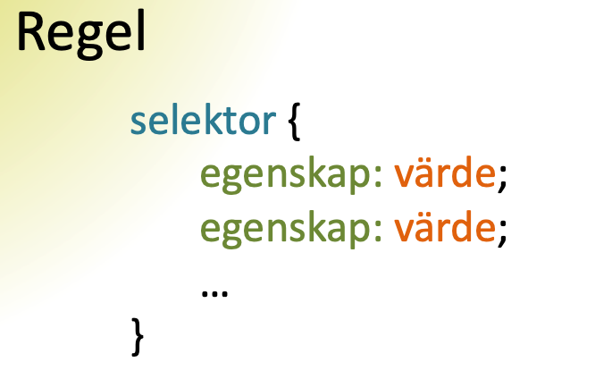

C. CSS
- Vad är en regel i CSS och vad består den av?
-
En css fil består av an lista av regler. En regel består två delar. Först kommer en selektor som väljer ut vilka element som regeln gäller för. Sedan följer ett deklarationsblock där man listar vilka egenskaper som ska förändras samt vilka värden de ska sättas till. T.ex regeln: p {color: black; } anger att paragraf element ska ha svart färg.

-
- Vad menas med kaskad i CSS?
-
Stilinställningarna kan delvis placeras på olika ställen, t.ex i en extern css fil eller i attributet "style" i en html tagg, komma ifrån olika CSS-dokument eller från olika CSS-regler som kommer efter varandra i sammma CSS-dokument. CSS-specifikationen har en form prioriteringssystem baserad på vissa beräkningar för att avgöra vilken stilregel som ska gälla om det är så att mer än en regel matchar mot ett visst element. Därmed uppnås ett förutsägbart resultat. Processen som systematisk går igenom alla regler och väljer ut vad som ska gälla är vad som kallas kaskaden.
-